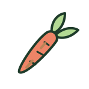

Tina ate here · May 2025
American Flatbread Co
“Please don’t crowd the place cause I wanna go back.”
“Quit playa-ing around and stop at Playa Bowls.”
Verdict coming Tina rates places in five phrases, not stars, and hasn’t picked one here yet. See all five
LTEF · Place · Playa Bowls
LTEF · Place · Facts
“Please don’t crowd the place cause I wanna go back.”

“My tastebuds are on tapas the world when they’re eating Bocado.”

“Please try the roasted carrots.”
“This place serves spud-tacular Korean fusion dishes.”
LTEF · Place · Nearby
LTEF · Place · Monthly Crumbs